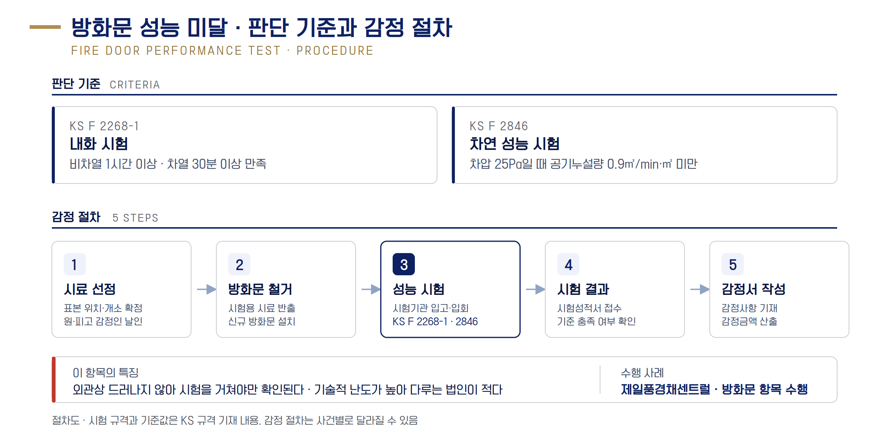

법무법인 제이엘 하자소송 수행 제안서
17 / 31
방화문 성능 미달 [고정]
외관은 멀쩡해도 내화·차연 성능시험에서 미달이 드러납니다

내화 시험
KS F 2268-1
기준
비차열 1시간 이상 + 차열 30분 이상
차연 성능 시험
KS F 2846
기준
차압 25Pa, 누설량 0.9㎥/min·㎡ 미만
인정 사례: 제일풍경채센트럴 · 방화문 성능 미달 판결 확보
[금액 확인 대기]
시료 선정부터 성적서 접수까지 감정 절차 전 과정에 입회합니다. 기술적으로 까다로워 다른 법인이 잘 다루지 못하는 항목입니다.